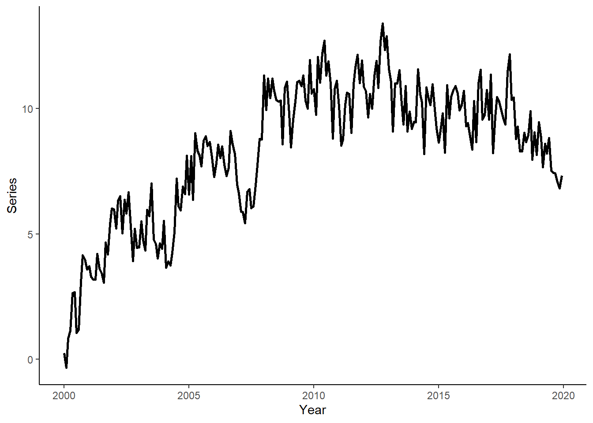

(this is a evaluation stuff, will need to move back)
In this tutorial, we will generate a time series, we will obtain one-step-ahead forecasts from competing models using a rolling window procedure, and we will perform the Diebold-Mariano type regression-based test for equal predictive ability of the competing models. To run the code, the data.table, ggplot2, lmtest, and sandwich packages need to be installed and loaded.
Let’s generate a time series that follow an AR(2) process of the following form: \[y_t = 0.2+1.1y_{t-1}-0.3y_{t-2}+\varepsilon_t\] where \(e_{t} \sim N(0,\sigma^2)\).
n <- 240
set.seed(6)
e <- rnorm(n,0,1)
y <- rep(NA,n)
y[1] <- 0.2+e[1]
y[2] <- 0.2+1.1*y[1]+e[2]
for(i in 3:n){
y[i] <- 0.2+1.1*y[i-1]-0.3*y[i-2]+e[i]
}Generate a vector of some arbitrary dates (e.g., suppose we deal with the monthly series beginning from January 2000), store these along with \(y\) in a data.table, call it ‘dt’, and plot the realized time series using ggplot function.
date <- seq(as.Date("2000-01-01"),by="month",along.with=y)
dt <- data.table(date,y)
ggplot(dt,aes(x=date,y=y))+
geom_line(size=1)+
labs(x="Year",y="Series")+
theme_classic()
Suppose the candidate models are AR(1), AR(2), and AR(3), and that we want to compare forecasts obtained from these models to those from a random walk process. Generate a sequence of one-step-ahead forecasts using the rolling window scheme, where the first rolling window ranges from period 1 to period 180. Calculate the RMSFE measures for the canddidate models.
dt[,`:=`(y1=shift(y,1),y2=shift(y,2),y3=shift(y,3))]
R <- 180
P <- nrow(dt)-R
dt[,`:=`(rw=as.numeric(NA),a1=as.numeric(NA),a2=as.numeric(NA),a3=as.numeric(NA))]
for(i in 1:P){
dt$rw[R+i] <- dt$y[R+i-1]
ar1 <- lm(y~y1,data=dt[i:(R+i-1)])
ar2 <- lm(y~y1+y2,data=dt[i:(R+i-1)])
ar3 <- lm(y~y1+y2+y3,data=dt[i:(R+i-1)])
dt$a1[R+i] <- ar1$coefficients%*%as.numeric(c(1,dt[R+i,c("y1")]))
dt$a2[R+i] <- ar2$coefficients%*%as.numeric(c(1,dt[R+i,c("y1","y2")]))
dt$a3[R+i] <- ar3$coefficients%*%as.numeric(c(1,dt[R+i,c("y1","y2","y3")]))
}
dt$rw_e <- dt$y-dt$rw
dt$a1_e <- dt$y-dt$a1
dt$a2_e <- dt$y-dt$a2
dt$a3_e <- dt$y-dt$a3
# RMSFEs
sqrt(mean(dt$rw_e^2,na.rm=T))## [1] 0.9653331sqrt(mean(dt$a1_e^2,na.rm=T))## [1] 0.9053279sqrt(mean(dt$a2_e^2,na.rm=T))## [1] 0.8842908sqrt(mean(dt$a3_e^2,na.rm=T))## [1] 0.8877883Do the autoregressive models generate ‘statistically significantly’ more accurate forecasts than the random walk model? We will answer this question by performing the regression-based Diebold-Mariano tests. First we will generate the loss differentials; then we will run three separate regressions to assess predictive accuracy of AR(1), AR(2), and AR(3) relative to the random walk; and finally we will base our decision on the heteroskedasticity and autocorrelation consistent standard errors.
dt$ld1 <- dt$rw_e^2-dt$a1_e^2
dt$ld2 <- dt$rw_e^2-dt$a2_e^2
dt$ld3 <- dt$rw_e^2-dt$a3_e^2
reg.ld1 <- lm(ld1~1,data=dt)
reg.ld2 <- lm(ld2~1,data=dt)
reg.ld3 <- lm(ld3~1,data=dt)
coeftest(reg.ld1,vcov.=vcovHAC(reg.ld1))##
## t test of coefficients:
##
## Estimate Std. Error t value Pr(>|t|)
## (Intercept) 0.112249 0.047525 2.3619 0.0215 *
## ---
## Signif. codes: 0 '***' 0.001 '**' 0.01 '*' 0.05 '.' 0.1 ' ' 1coeftest(reg.ld2,vcov.=vcovHAC(reg.ld2))##
## t test of coefficients:
##
## Estimate Std. Error t value Pr(>|t|)
## (Intercept) 0.149898 0.083086 1.8041 0.07632 .
## ---
## Signif. codes: 0 '***' 0.001 '**' 0.01 '*' 0.05 '.' 0.1 ' ' 1coeftest(reg.ld3,vcov.=vcovHAC(reg.ld3))##
## t test of coefficients:
##
## Estimate Std. Error t value Pr(>|t|)
## (Intercept) 0.143700 0.081309 1.7673 0.08235 .
## ---
## Signif. codes: 0 '***' 0.001 '**' 0.01 '*' 0.05 '.' 0.1 ' ' 1Page built: 2022-07-16 using R version 4.1.2 (2021-11-01)